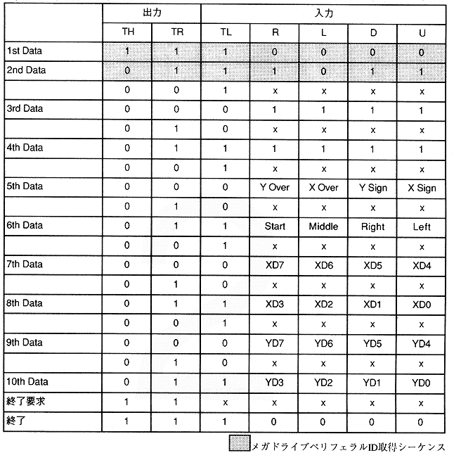

Y Over, X Over 0: X or Y data is valid. * 1. Data overflows. (Over 255) Y Sign, X Sign 0: X, Y data is a positive value. : Data of 1: X, Y is a negative value. XD7 to XD0, YD7 to YD0 Absolute value of mouse movement 1 when the Start, Middle, Right, Left button is pressed.